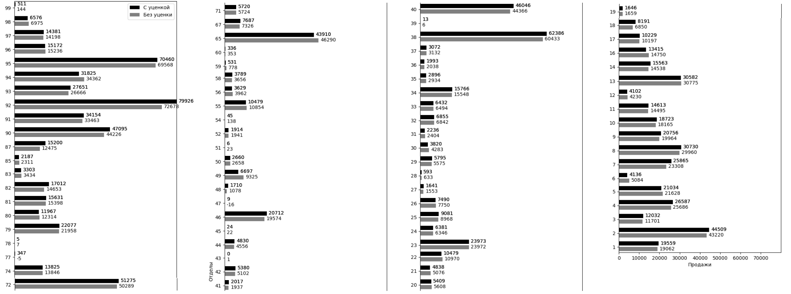
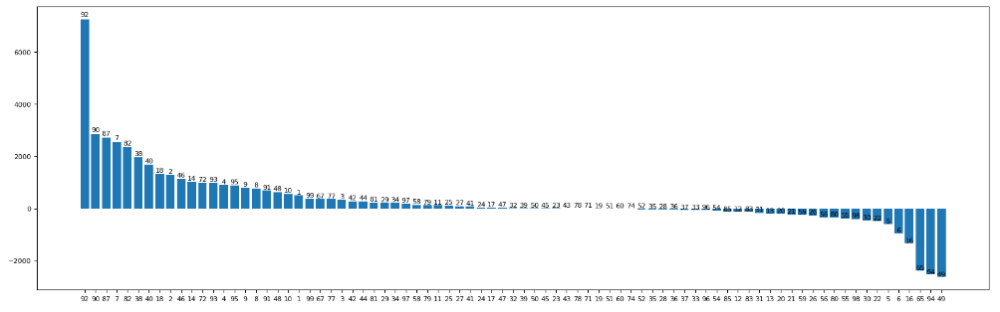
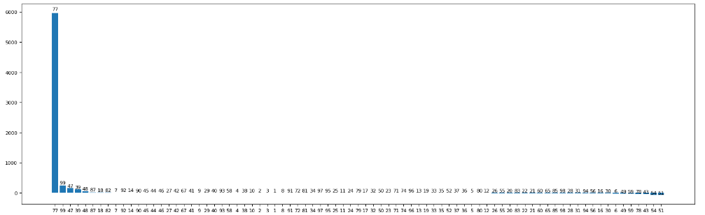
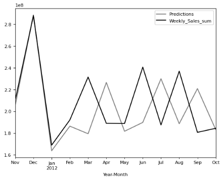
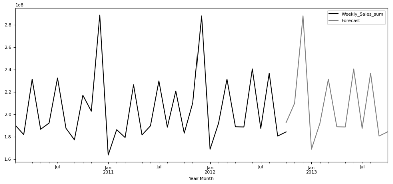

Исследование влияния уценки на продажи в сети розничных магазинов и составление прогноза на следующий год
-
Источник
Реализация проекта производилась в качестве летней практики в конце 3 курса (лето 2022 года). Выбор темы и технологий был свободным.Несмотря на активное развитие интернет-торговли опрос, проведённый среди 400 жителей Москвы и Санкт-Петербурга в 2022 году компанией Strategy Partners, показал, что 93% респондентов посещают физические магазины. Поэтому для работы был выбран датасет, содержащий исторические данные о продажах для 45 магазинов, расположенных в разных регионах. -
Цель и задачи
Цель проекта состояла в анализе розничной торговли сети из 45 магазинов на Python.Для осуществления цели были поставлены задачи:
— предсказать, какие отделы при проведении уценки будут затронуты и в какой степени;
— спрогнозировать продажи на следующий год. -
Методы
Авторегрессионная модель интегрированной скользящей средней
Вычисление средних, минимальных и максимальных значений -
Инструменты
Язык программирования Python и его библиотеки:
NumPy
Pandas
Matplotlib
Seaborn
Pmdarima
Модуль statistics
Scikit-learn
Statsmodels -
Результат
Для изучения влияния уценок на отделы использовались усреднённые данные по всем магазинам. Так как данные анонимизированны, считалось, что метки от 1 до 5 означают условную категорию уценки, а значение — условный код. Тогда для определения средних продаж под влиянием уценки выбирались отделы, у которых значения уценки определённой категории больше 0.В результате был сделан вывод, что у отделов с более высокими продажами отмечается больший рост, чем у отделов с низкими. При этом отделы 77, 99, 47 и 39 хоть и имеют наибольший прирост в процентах, их продажи не влияют на общий рост продаж. Однако при проведении любой категории уценок отсутствуют отрицательные продажи. Из проанализированных категорий наибольшее влияние оказывают уценки четвёртой категории, а наименьшее — пятой. Пик месячных продаж приходится на декабрь, после чего, в январе, наблюдается сильный спад, каждый сезон после резкого роста происходит резкий спад. Также в следующем году ожидаются большие продажи в марте, июне и августе, что можно увидеть в описании проекта. -
Перейти на страницу с листингом кода (ссылка)
-
Описание
Для упрощения работы и сокращения кода было составлено построение графиков и таблиц для сравнения продаж и оценки влияния в одну функцию (reserch_markdown(категория_уценки)), которая состоит из следующего набора функций:
• filter_dept_sales (DataFrame) — функция для определения среднего значения для каждого из отделов;
• paint_graph (Значения, Список отделов)— функция для построения отсортированного по убыванию графика;
• show_table_depts (Список отделов, Значения при отсутствии уценок, Значения при наличии уценок, Разность, Оценка роста/падения продаж в процентах, Номер категории уценки) — функция вывода таблицы всех параметров сравнения;
• paint_double_graph (Список отделов, Значения без уценки, Значения с уценкой) — построение двойного столбчатого графика для сравнения продаж;
• different (С уценкой, Без уценки) — функция подсчёта разности между средними продажами;
• different_part (С уценкой, Без уценки) — функция оценки роста/падения продаж в процентах.
Код перечисленных функций можно изучить, перейдя по ссылке выше на страницу с листингом кода.В результате работы вышеописанной функции сначала выводится вертикальная столбчатая диаграмма, которая расположена ниже. Этот график отражает среднее изменение продаж в отделе во всех магазинах при наличии уценки определённой категории (в данном случае, первой).Затем печатается таблица, где изменения отсортироаны по убыванию процента прироста продаж. Фрагмент таблицы представлен ниже.Отдел Нет уценки Есть уценка первой категории С уценкой - Нет уценки Изменение в процентах 0 77 -5.933 347.829 353.762 5963.111 1 99 144.171 511.321 367.150 254.663 2 47 -16.810 9.513 26.322 156.590 3 39 6.487 13.906 7.419 114.378 4 48 1078.384 1710.891 632.507 58.653 ... ... ... ... ... ... На следующем графике (изображение ниже) в виде столбчатой диаграммы отображены средние изменения прода в отделах в денежных единицах с сортировкой по росту/убыли по убыванию.Также в анализе влияния уценки на продажи рассматривается график изменения продаж в процентах при проведении уценки первой категории, который позволяет посмотреть на задачу под другим углом. Диаграмма ниже показывает, что наибольшее влияние уценка оказывает на 77 отдел, тогда как график выше показывет большой рост продаж в 92 отделе. Аналогичным образом анализировались уценки других категорий.Прогнозироание продаж на следующий год осуществлялось с помощью ARIMA модели. ARIMA расшифровывается как авторегрессионная модель интегрированной скользящей средней и определяется тремя параметрами порядка: (p, d, q).
•AR (p) Авторегрессия – регрессионная модель, которая использует зависимую связь между текущим наблюдением и наблюдениями за предыдущий период.Авторегрессионный (AR (p)) компонент относится к использованию прошлых значений в уравнении регрессии для временного ряда.
•I (d) Интеграция – использует дифференцирование наблюдений (вычитание наблюдения из наблюдения на предыдущем временном шаге), чтобы сделать временные ряды стационарными. Дифференцирование включает в себя вычитание текущих значений ряда с его предыдущими значениями d количество раз.
•MA (q) Скользящее среднее – модель, которая использует зависимость между наблюдением и остаточной ошибкой из модели скользящего среднего, применяемой к запаздывающим наблюдениям. Компонент скользящего среднего отображает ошибку модели как комбинацию предыдущих условий ошибки. Порядок q представляет количество терминов, которые должны быть включены в модель.Функция auto_arima() из библиотеки pmdarima помогает нам определить наиболее оптимальные параметры для модели ARIMA и возвращает подходящую модель ARIMA.Набор данных был разделён на обучающий и тестовый. Это разделение использовалось для сравнения прогнозных значений с фактическими. Сравнение было представлено графически на изображении справа. Средняя ошибка аппроксимации для построенной модели составляет 0,99, что говорит об отличном качестве.После тестирования модель была обучена на полном наборе данных, и был сделан прогноз на следующий год с построением графика, представленным ниже.